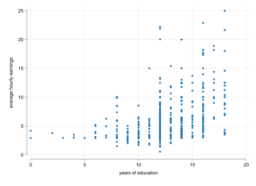
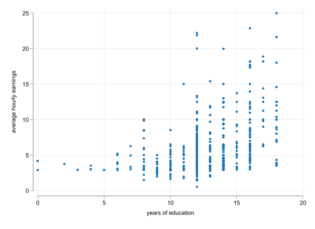
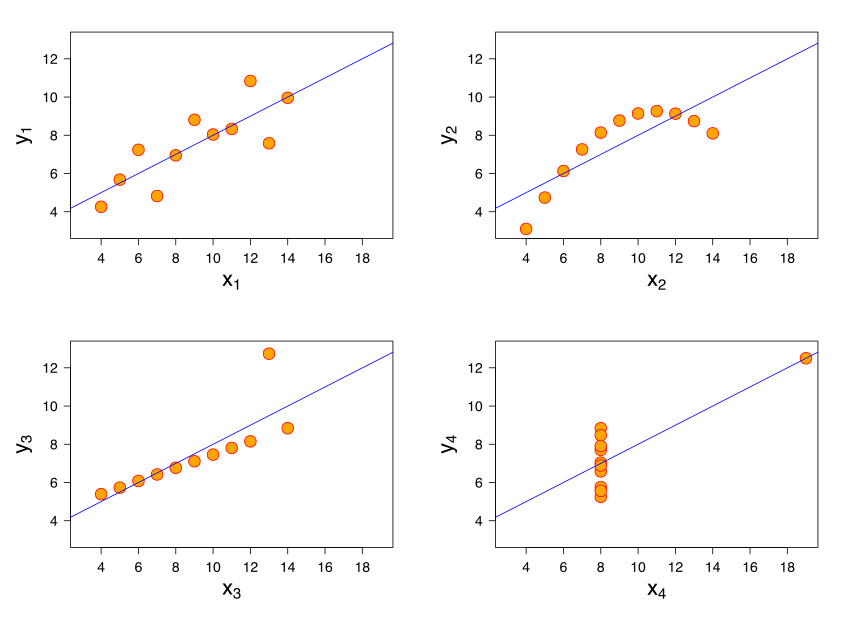
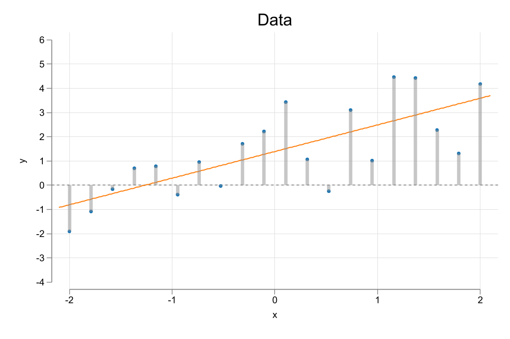
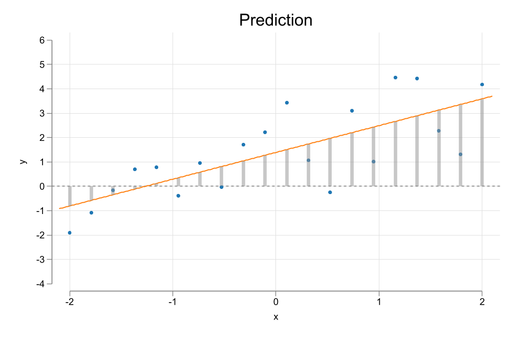
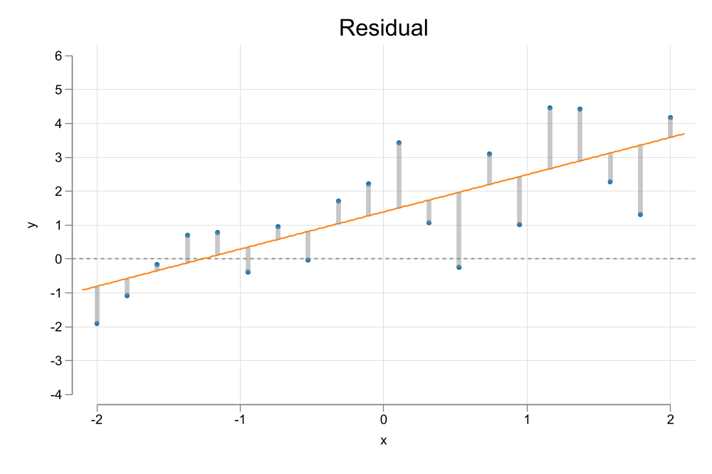
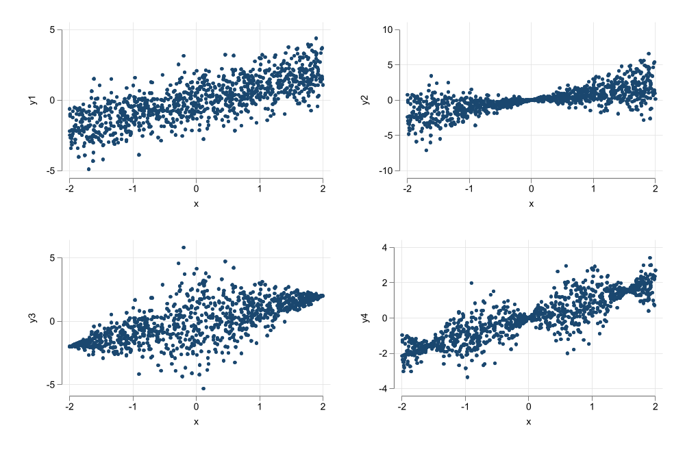
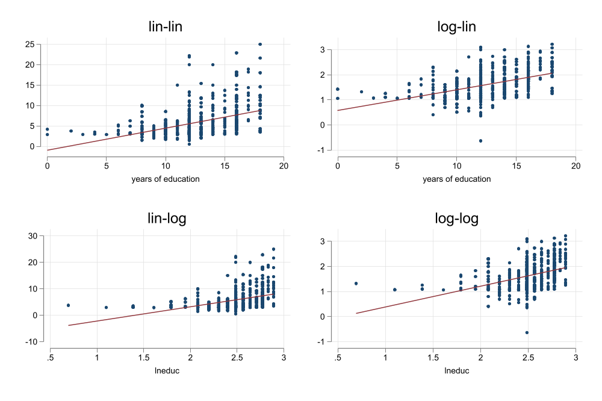

** To download all Wooldrige Files
qui: ssc install frause, replace
** for some additional color schemes
qui: ssc install color_style
set scheme white2
color_style tableau
** Loads file wage1
frause wage1, clear
scatter wage educ
The first tool of Many
Fernando Rios-Avila
As we saw in the previous slides, one of the important steps when doing empirical analysis is to develop a model that describes reality.
This model is quite abstract, as it rarely provides guidance regarding on How should you build your econometric model.
In this chapter, we introduce the first (boring) tool to solve this problem. The simple Regression model or SRL
A Simple regression model is known as such because it aims to capture the relationship between two variables.
It does not mean it ignores other factors, but rather, bundles them together as part of a Bag of Holding or error. In its most flexible setup, a simple regression model can be written as:
\[y = f(x,u) \]
This model simply says that there is some relationship between:
\(y\), your outcome, dependent, explained, response, variable
and \(x\), your independent, explanatory, regression, variable
whereas everything else not considered is assumed to be part of the unobserved \(u\).
A good reason why one should start thinking about the model as shown earlier is to acknowledge that we Do not know the functional form between \(x\) and \(y\).
Further, we don’t even know how \(u\) interacts with \(x\).
This brings us to the first step one should do (almost always) when analyzing data…Create a plot to see if there is any relationship in the data
** To download all Wooldrige Files
qui: ssc install frause, replace
** for some additional color schemes
qui: ssc install color_style
set scheme white2
color_style tableau
** Loads file wage1
frause wage1, clear
scatter wage educ

This model has a lot packed in.
It also assumes the population relationships: \[E(y|x) = \beta_0 + \beta_1 x\]
\[E(y|x) = \beta_0 + \beta_1 x\]
This is your Population Regresson function. To interpret it, we need to assume \(u\) is fixed (ceteris paribus). This implies that \[E(u|x)=c=0\]
Which says that the errors are mean independent of \(x\). Thus, for all practical purposes, when \(x\) changes, we will assume \(u\) is as good as fixed.
Under these conditions, we can interpret the coefficients:
\[\Delta y = \beta_1 \Delta x \rightarrow \frac{\Delta y}{\Delta x} = \beta_1 \]
\[yield = \beta_0 + \beta_1 fertilizer + u\]
\(\beta_1\) Effect of Fertilizer (an additional dosage) on Soybean Yield
\[wage = \beta_0 + \beta_1 educ + u \]
\(\beta_1\) Change in wages given an additional year of education.
There are an infinite number of candiates for \(\beta_0 \& \beta_1\).
OLS, is one of the multiple methods that allows us to estimate the coefficients of a SLRM1.
The goal is to Choose parameters \(\beta={\beta_0,\beta_1}\) that “minimizes” the Squared of the residuals.
set seed 10
clear
range x -2 2 20
gen y = 1 + x + rnormal()
color_style tableau
two (scatter y x) ///
(function y = 0.5 + 2*x, range(-1.8 2.4)) ///
(function y = 2 + 0.5*x, range(-1.8 2.4)) ///
(function y = 1 + 1*x, range(-1.8 2.4)) , ///
legend(order(2 "y=0.5+2x" 3 "y=2+0.5x" 4 "y=1+1x"))
graph export images/fig2_1.png , replace width(1000)
gen y1=.5+2*x
gen y2=2+0.5*x
gen y3=+1+1*x
two (scatter y x) ///
(function y = 0.5 + 2*x, range(-1.8 2.4)) ///
(rspike y y1 x), ylabel(-4/6) ytitle(y) ///
legend(order(1 "Data" 2 "Prediction " 3 "Residual"))
graph export images/fig2_2.png , replace width(1000)
two (scatter y x) ///
(function y = 2 + 0.5*x, range(-1.8 2.4)) ///
(rspike y y2 x), ylabel(-4/6) ytitle(y) ///
legend(order(1 "Data" 2 "Prediction " 3 "Residual"))
graph export images/fig2_3.png , replace width(1000)
two (scatter y x) ///
(function y = 1 + 1*x, range(-1.8 2.4)) ///
(rspike y y3 x) , ylabel(-4/6) ytitle(y) ///
legend(order(1 "Data" 2 "Prediction " 3 "Residual"))
graph export images/fig2_4.png , replace width(1000)
reg y x
predict yh
two (scatter y x) ///
(function y = _b[_cons] + _b[x]*x, range(-1.8 2.4)) ///
(rspike y yh x) , ylabel(-4/6) ytitle(y) ///
legend(order(1 "Data" 2 "Prediction " 3 "Residual"))
graph export images/fig2_5.png , replace width(1000) \[y_i =\beta_0 + \beta_1 x_i + u_i \rightarrow u_i = y_i - \beta_0 - \beta_1 x_i \]
\[{\hat\beta_0,\hat\beta_1} = \min_{\beta_0,\beta_1} = SSR =\sum_{i=1}^N u_i^2 = \sum_{i=1}^N (y-\beta_0 - \beta_1 x_i)^2 \\ \]
First Order Conditions:
\[ \begin{aligned} \frac{\partial SSR}{\partial \beta_0} &= -2 \sum (y_i-\beta_0 - \beta_1 x_i) = -2 \sum u_i =0 \\ \frac{\partial SSR}{\partial \beta_1} &= -2 \sum x_i (y_i-\beta_0 - \beta_1 x_i) =- 2 \sum x_i u_i =0 \end{aligned} \]
Similar conditions as before (but now Mathematically):
\[\begin{aligned} \sum u_i &=0 \rightarrow nE(e) = 0 \\ \sum x_i u_i &=0 \rightarrow nE(x*e) \rightarrow n Cov(x,e) =0 \end{aligned} \]
And the First Order Conditions simply provide a system of \(k+1\) equations with \(k+1\) unknowns.
\[\begin{aligned} \hat\beta_0 &= \bar y - \beta_1 \bar x \\ \hat\beta_1 &= \frac{\sum (x_i-\bar x)(y_i-\bar y)}{\sum (x_i-\bar x)^2} = \frac{\hat \rho \hat \sigma_x \hat \sigma_y}{\hat \sigma_x^2} = \frac{\hat \rho \hat \sigma_y}{\hat \sigma_y} \end{aligned} \]
\[\hat\beta_0 = \bar y - \hat \beta_1 \bar x\]
\[ \hat\beta_1 = \frac {cov(x,y)}{var(x)}= \hat \rho\frac{ \hat \sigma_x \hat \sigma_y}{\hat \sigma_x^2} = \hat \rho\frac{ \hat \sigma_y}{\hat \sigma_x} \]
Also, this \(\hat y = \hat \beta_0 + \hat \beta_1 x\) becomes your sample regression function
gen y0 = 0
two (scatter y x) ///
(function y = _b[_cons] + _b[x]*x, range(-2.1 2.1)) ///
(rspike y y0 x, color(gs9%50) lw(1)) ///
, ylabel(-4/6) ytitle(y) yline(0) ///
title("Data") legend(off)
graph export images/fig2_6.png, replace width(1000)
two (scatter y x) ///
(function y = _b[_cons] + _b[x]*x, range(-2.1 2.1)) ///
(rspike yh y0 x, color(gs9%50) lw(1)) ///
, ylabel(-4/6) ytitle(y) yline(0) ///
title("Prediction") legend(off)
graph export images/fig2_7.png, replace width(1000)
two (scatter y x) ///
(function y = _b[_cons] + _b[x]*x, range(-2.1 2.1)) ///
(rspike y yh x, color(gs9%50) lw(1)) ///
, ylabel(-4/6) ytitle(y) yline(0) ///
title("Residual") legend(off)
graph export images/fig2_8.png, replace width(1000) 


\[ \sum_i^n \hat u_i = 0 \ \& \ \sum_i^n x_i \hat u_i = 0 \]
In average \(u_i\) is zero, and uncorrelated with \(x\), and \(\bar y , \bar x\) is on the regression line
\[ \begin{aligned} \sum_{i=1}^n(y_i-\bar y)^2 &= \sum_{i=1}^n(y_i-\hat y)^2 + \sum_{i=1}^n(\hat y-\bar y)^2 \\ SST &= SSE + SSR \end{aligned} \]
\[R^2= 1-\frac {SSR} {SST}=\frac {SSE} {SST}\]
We now know how to estimate coefficients given some data, but we need to ask the questions:
How do we know if the estimated coefficients are indeed appropriate for the population parameters?
How can we know the precision (or lack there off) of the estimates
Remember, \(\hat \beta's\) depend on the sample. Different Samples will lead to different estimates. Thus \(\hat \beta's\) are random.
In repeated sampling scenarios, we could empirically obtain the distribution of the estimated parameters, and verify if estimations are unbiased.
However, we can also do that based on analytical solutions. Lets see those assumptions
An estimator is said to be unbiased if \(E(\hat\beta)=\beta\)
We need to assume the population model is linear in parameters:
\[y_i = \beta_0 + \beta_1 x_i + u_i\]
In other words, we need to assume that the model we chose is a good representation of what the true population model is.
Additive error, with a linear relationship between \(x_i\) on \(y_i\).
We can make it more flexible using some transformations of \(x_i\).
The data we are using is collected from a Random sample of the population, for which the linear model is valid.
\[\sum_{i=1}^n (x_i - \bar x)^2 >0 \]
If there is no variation in the data, there are no slopes to estmate, and a solution cannot be found to the linear model.
\[E(u_i)= E(u_i|x_i) = 0 \]
We expect unobserved factors \(u_i\) to have a zero average effect on the outcome. This helps identify the constant \(\beta_0\).
We also expect that the expected value of \(u_i\) to be zero for any value of \(x\).
If Assumptions 1-4 Hold, then OLS allows you to estimate the coefficents of the linear Regression model.
\[\hat \beta_1 = \frac {\sum \tilde x_i \tilde y_i}{\sum \tilde x_i^2} , \tilde x_i=x_i - \bar x \]
\[\begin{aligned} \hat \beta_1 &= \frac {\sum \tilde x_i (\beta_1 \tilde x_i +e)}{\sum \tilde x_i^2} = \beta_1 \frac {\sum \tilde x_i^2 }{\sum \tilde x_i^2} + \frac {\sum \tilde x_i u_i }{\sum \tilde x_i^2} \\ E(\hat \beta_1) &= \beta_1 \end{aligned} \]
While coefficients can be different for each sample, In average, they will be the same as the true parameters.
How precise are the estimates?
\[\hat \beta_1 = \beta_1 + \frac {\sum \tilde x_i u_i }{\sum \tilde x_i^2} \]
If we assume \(x's\) are assume fixed, the distribution from \(\beta's\) will depend only on the variation of the error \(u_i\).
Thus we need to impose an additional assumption on this errors, to estimate the variance of \(\beta's\). (at least for convinience)
\[E(u_i^2)= E(u_i ^2 | x_i) = \sigma_u ^2 \]
clear
set scheme white2
set obs 1000
gen x = runiform(-2 , 2)
gen u = rnormal()
gen y1 = x + u
gen y2 = x + u*abs(x)
gen y3 = x + u*(2-abs(x))
gen y4 = x + u*(sin(2*x))
two scatter y1 x, name(m1, replace)
scatter y2 x, name(m2, replace)
scatter y3 x, name(m3, replace)
scatter y4 x, name(m4, replace)
graph combine m1 m2 m3 m4
graph export images/fig2_9.png, replace width(1000)
We Start with:
\[ \hat \beta_1 - \beta_1 = \frac {\sum \tilde x_i u_i }{\sum \tilde x_i^2} \]
And apply the Variance operator:
\[\begin{aligned} Var(\hat \beta_1 - \beta_1) &= Var \left( \frac {\sum \tilde x_i u_i }{\sum \tilde x_i^2} \right)= \frac{\tilde x_1 Var(u_i)}{(\sum x_i^2)^2}+\frac{\tilde x_2^2 Var(u_i)}{(\sum x_i^2)^2}+...+\frac{\tilde x_n^2 Var(u_i)}{(\sum x_i^2)^2} \\ &= \frac {\sum \tilde x_i^2 Var( u_i) }{(\sum \tilde x_i^2)^2} =\frac {\sum \tilde x_i^2 \sigma_u^2 }{(\sum \tilde x_i^2)^2} \\ &= \sigma_u^2 \frac {\sum \tilde x_i^2 }{(\sum \tilde x_i^2)^2} = \frac{\sigma_u^2}{\sum \tilde x_i^2} \end{aligned} \]
To estimate \(Var(\beta's)\) we also need \(\sigma^2_u\). But \(u\) is not observed, since we only observe \(\hat u\).
\[\hat u_i = u_i + (\beta_0 - \hat \beta_0) + (\beta_1 - \hat \beta_1)*x_i \]
And since to estimate \(\hat u_i\) we need to estimate \(\beta_0\) and \(\beta_1\), we “lose” degrees of freedom that will require adjustment.
So, we use the following:
\[\hat \sigma^2_u = \frac {1}{N-2} \sum_{i=1}^N \hat u_i^2 \]
Deriving OLS \(\beta's\):
** Wage and Education: Example 2.7
frause wage1, clear
mata: y = st_data(.,"wage")
mata: x = st_data(.,"educ")
mata: b1 = sum( (x :- mean(x)) :* (y :- mean(y)) ) / sum( (x :- mean(x)):^2 )
mata: b0 = mean(y)-mean(x)*b1
mata: b1, b0 1 2
+-----------------------------+
1 | .5413592547 -.904851612 |
+-----------------------------+SST = SSE + SSR
mata: yh = b0:+b1*x
mata: sst = sum( (y:-mean(y)):^2 )
mata: sse = sum( (yh:-mean(y)):^2 )
mata: ssr = sum( (y:-yh):^2 )
mata: sst, sse, ssr, sse + ssr 1 2 3 4
+---------------------------------------------------------+
1 | 7160.414291 1179.732036 5980.682255 7160.414291 |
+---------------------------------------------------------+\(R^2\):
1 2
+---------------------------+
1 | .164757511 .164757511 |
+---------------------------+\(\hat\sigma_\beta\)
mata: sig2_u = ssr / (rows(y)-2)
mata: sst_x = sum( (x:-mean(x)):^2 )
mata: sig_b1 = sqrt( sig2_u / sst_x )
mata: sig_b0 = sqrt( sig2_u * mean(x:^2) / sst_x )
mata: sig_b1 , sig_b0 1 2
+-----------------------------+
1 | .0532480368 .6849678211 |
+-----------------------------+Stata command:
Source | SS df MS Number of obs = 526
-------------+---------------------------------- F(1, 524) = 103.36
Model | 1179.73204 1 1179.73204 Prob > F = 0.0000
Residual | 5980.68225 524 11.4135158 R-squared = 0.1648
-------------+---------------------------------- Adj R-squared = 0.1632
Total | 7160.41429 525 13.6388844 Root MSE = 3.3784
------------------------------------------------------------------------------
wage | Coefficient Std. err. t P>|t| [95% conf. interval]
-------------+----------------------------------------------------------------
educ | .5413593 .053248 10.17 0.000 .4367534 .6459651
_cons | -.9048516 .6849678 -1.32 0.187 -2.250472 .4407687
------------------------------------------------------------------------------First thing you should always consider doing is obtaining some summary statistics.
without that its difficult o understand the magnitud of the coefficients and their effects.
frause ceosal1, clear
display "***Variables Description***"
des salary roe
display "***Summary Statistics***"
sum salary roe
display "***Simple Regression***"
reg salary roe***Variables Description***
Variable Storage Display Value
name type format label Variable label
-------------------------------------------------------------------------------
salary int %9.0g 1990 salary, thousands $
roe float %9.0g return on equity, 88-90 avg
***Summary Statistics***
Variable | Obs Mean Std. dev. Min Max
-------------+---------------------------------------------------------
salary | 209 1281.12 1372.345 223 14822
roe | 209 17.18421 8.518509 .5 56.3
***Simple Regression***
Source | SS df MS Number of obs = 209
-------------+---------------------------------- F(1, 207) = 2.77
Model | 5166419.04 1 5166419.04 Prob > F = 0.0978
Residual | 386566563 207 1867471.32 R-squared = 0.0132
-------------+---------------------------------- Adj R-squared = 0.0084
Total | 391732982 208 1883331.64 Root MSE = 1366.6
------------------------------------------------------------------------------
salary | Coefficient Std. err. t P>|t| [95% conf. interval]
-------------+----------------------------------------------------------------
roe | 18.50119 11.12325 1.66 0.098 -3.428196 40.43057
_cons | 963.1913 213.2403 4.52 0.000 542.7902 1383.592
------------------------------------------------------------------------------Now, Changing scales has no effect on \(R^2\), nor the coefficient to Standard error ratio (\(t-stat\))
It could allow for easier interpretation of the results.
gen saldol=salary*1000
gen roedec=roe / 100
qui: reg salary roe
est sto m1
qui: reg saldol roe
est sto m2
qui: reg salary roedec
est sto m3
esttab m1 m2 m3, se r2
------------------------------------------------------------
(1) (2) (3)
salary saldol salary
------------------------------------------------------------
roe 18.50 18501.2
(11.12) (11123.3)
roedec 1850.1
(1112.3)
_cons 963.2*** 963191.3*** 963.2***
(213.2) (213240.3) (213.2)
------------------------------------------------------------
N 209 209 209
R-sq 0.013 0.013 0.013
------------------------------------------------------------
Standard errors in parentheses
* p<0.05, ** p<0.01, *** p<0.001It is possible to incorporate some nonlinearities by using “log” transformations:
\[ \begin{aligned} log(y) &= \beta_0 + \beta_1 x + e \rightarrow & 100\beta_1 \simeq \frac{\% \Delta y}{\Delta x} \\ y &= \beta_0 + \beta_1 log(x) + e \rightarrow & \frac {\beta_1}{100} \simeq \frac{\Delta y}{\% \Delta x} \\ log(y) &= \beta_0 + \beta_1 log(x) + e \rightarrow & \beta_1 =\frac{\% \Delta y}{\% \Delta x} \end{aligned} \]
This allows us to estimate other interesting relationships with a the SRM. Specifically Semi-elasticities and Elasticities.
This transformation compresses the distribution of a variable, potentially addressing problems of Heteroskedasticity (non-constant variance)
*** Example 2.10
frause wage1, clear
gen lnwage = log(wage)
gen lneduc = log(educ)
two scatter wage educ || lfit wage educ , ///
name(m1, replace) title(lin-lin) legend(off)
two scatter lnwage educ || lfit lnwage educ , ///
name(m2, replace) title(log-lin) legend(off)
two scatter wage lneduc || lfit wage lneduc , ///
name(m3, replace) title(lin-log) legend(off)
two scatter lnwage lneduc || lfit lnwage lneduc, ///
name(m4, replace) title(log-log) legend(off)
graph combine m1 m2 m3 m4,
graph export images/fig2_10.png, width(1000) replace
set linesize 255
qui: reg wage educ
est sto m1
qui: reg lnwage educ
est sto m2
qui: reg wage lneduc
est sto m3
qui: reg lnwage lneduc
est sto m4
esttab m1 m2 m3 m4, se r2 nonumber compress nostar nogaps
--------------------------------------------------
wage lnwage wage lnwage
--------------------------------------------------
educ 0.541 0.0827
(0.0532) (0.00757)
lneduc 5.330 0.825
(0.608) (0.0864)
_cons -0.905 0.584 -7.460 -0.445
(0.685) (0.0973) (1.532) (0.218)
--------------------------------------------------
N 526 526 524 524
R-sq 0.165 0.186 0.128 0.149
--------------------------------------------------
Standard errors in parentheses
An additional year of education
1. Increases hourly wages in 54cnts
2. Increases hourly wages in 8.3%
3. A 1% increase in years of education (about 1.5months) increases wages in 5.3cnts
4. A 1% increase in years of education would increase wages in 0.82%.A SLRM can also be done using Dummy variables. (Those that take only two values: 0 or 1)
This type of modeling may be observed when evaluating programs (Were you treated?(Tr=1) or not (Tr=0))
And can be used to Easily compare means across two groups:
\[wage = \beta_0 + \beta_1 female + e \]
In this particular case, both \(\beta_0 \& \beta_1\) have clear interpretation:
\[ \begin{aligned} \beta_0 &= E(wage|female=0) \\ \beta_1 &= E(wage|female=1) - E(wage|female=0) \end{aligned} \]
In most Software, you need to either Create the new variable explicitly, or use internal code to make it for you:
frause wage1, clear
** verify Coding
ssc install fre, replace
fre female
** create your own
gen is_male = female==0
** Regression using Newly created variable
reg wage is_male
** Regression using Stata "factor notation"
reg wage i.femalechecking fre consistency and verifying not already installed...
all files already exist and are up to date.
female -- =1 if female
-----------------------------------------------------------
| Freq. Percent Valid Cum.
--------------+--------------------------------------------
Valid 0 | 274 52.09 52.09 52.09
1 | 252 47.91 47.91 100.00
Total | 526 100.00 100.00
-----------------------------------------------------------
Source | SS df MS Number of obs = 526
-------------+---------------------------------- F(1, 524) = 68.54
Model | 828.220467 1 828.220467 Prob > F = 0.0000
Residual | 6332.19382 524 12.0843394 R-squared = 0.1157
-------------+---------------------------------- Adj R-squared = 0.1140
Total | 7160.41429 525 13.6388844 Root MSE = 3.4763
------------------------------------------------------------------------------
wage | Coefficient Std. err. t P>|t| [95% conf. interval]
-------------+----------------------------------------------------------------
is_male | 2.51183 .3034092 8.28 0.000 1.915782 3.107878
_cons | 4.587659 .2189834 20.95 0.000 4.157466 5.017852
------------------------------------------------------------------------------
Source | SS df MS Number of obs = 526
-------------+---------------------------------- F(1, 524) = 68.54
Model | 828.220467 1 828.220467 Prob > F = 0.0000
Residual | 6332.19382 524 12.0843394 R-squared = 0.1157
-------------+---------------------------------- Adj R-squared = 0.1140
Total | 7160.41429 525 13.6388844 Root MSE = 3.4763
------------------------------------------------------------------------------
wage | Coefficient Std. err. t P>|t| [95% conf. interval]
-------------+----------------------------------------------------------------
1.female | -2.51183 .3034092 -8.28 0.000 -3.107878 -1.915782
_cons | 7.099489 .2100082 33.81 0.000 6.686928 7.51205
------------------------------------------------------------------------------if the Dummy is a treatment, and Assumption 4 Holds, then you can use this to estimate Average Treatment Effects (ATE) aka Average Casual Effects. (Usually requires randomization)
\[ \begin{aligned} y_i &= y_i(0)(1-D) + y_i(1)D \\ y_i &= y_i(0) + (y_i(1)-y_i(0))*D \\ y_i &= \bar y_0 + u_i(0) + (\bar y_1 - \bar y_0)*D + (u_i(1)-u_i(0))*D \\ y_i &= \alpha_0 + \tau_{ate} D + u_i \end{aligned} \]
But we expect \(u_i(1)-u_i(0)=0\)
Source | SS df MS Number of obs = 445
-------------+---------------------------------- F(1, 443) = 8.04
Model | 348.013451 1 348.013451 Prob > F = 0.0048
Residual | 19177.6432 443 43.2903909 R-squared = 0.0178
-------------+---------------------------------- Adj R-squared = 0.0156
Total | 19525.6566 444 43.9767041 Root MSE = 6.5795
------------------------------------------------------------------------------
re78 | Coefficient Std. err. t P>|t| [95% conf. interval]
-------------+----------------------------------------------------------------
1.train | 1.794343 .6328536 2.84 0.005 .5505748 3.038111
_cons | 4.554802 .408046 11.16 0.000 3.752856 5.356749
------------------------------------------------------------------------------